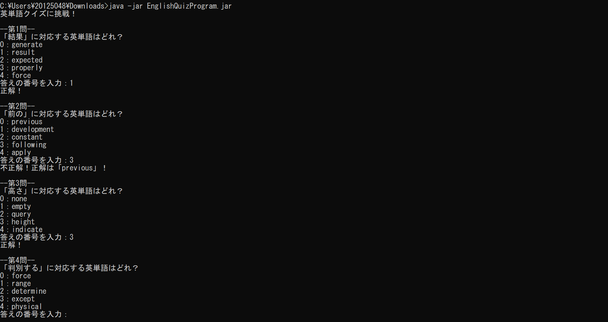
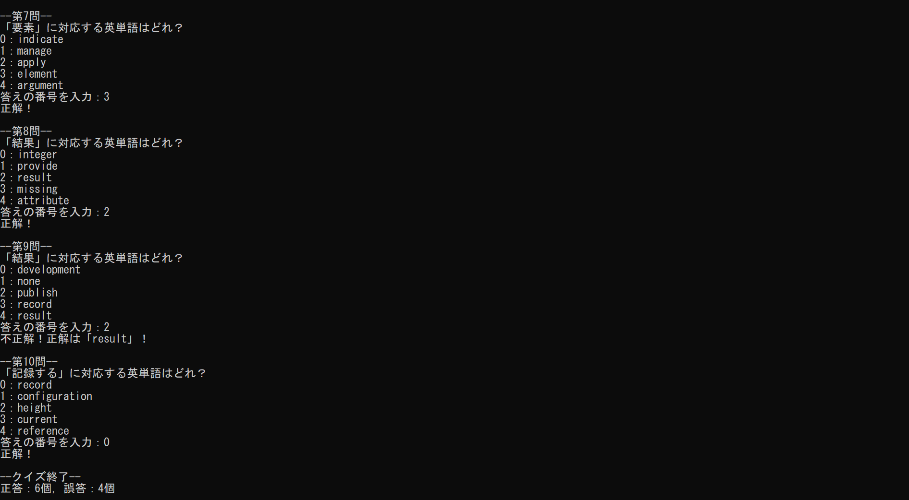
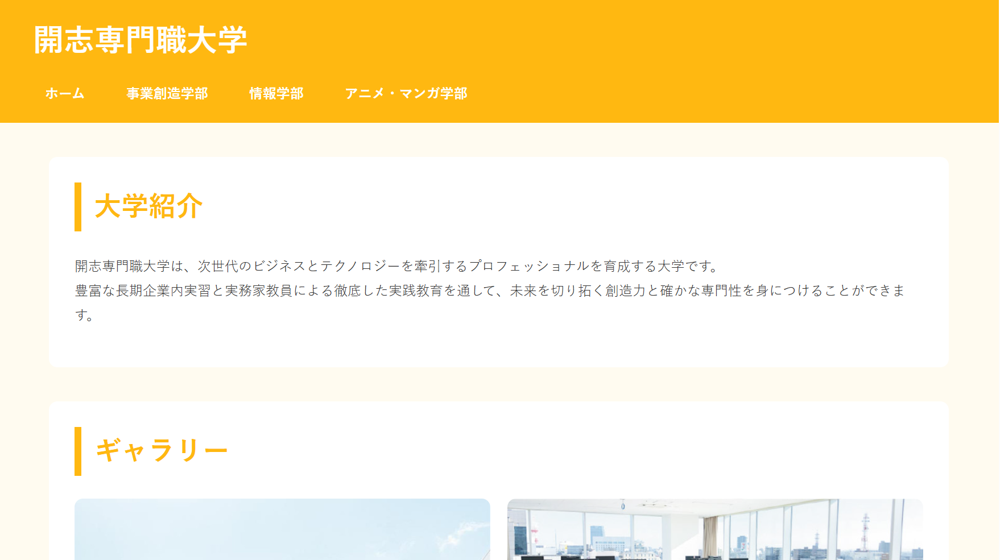
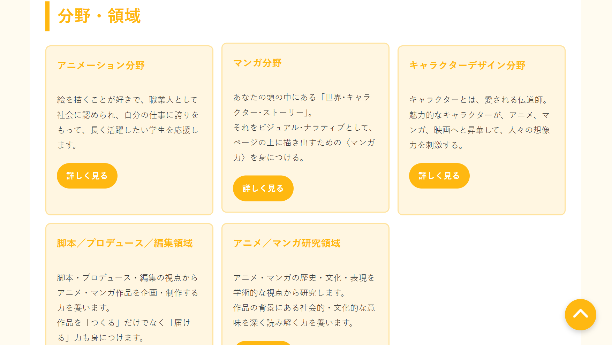
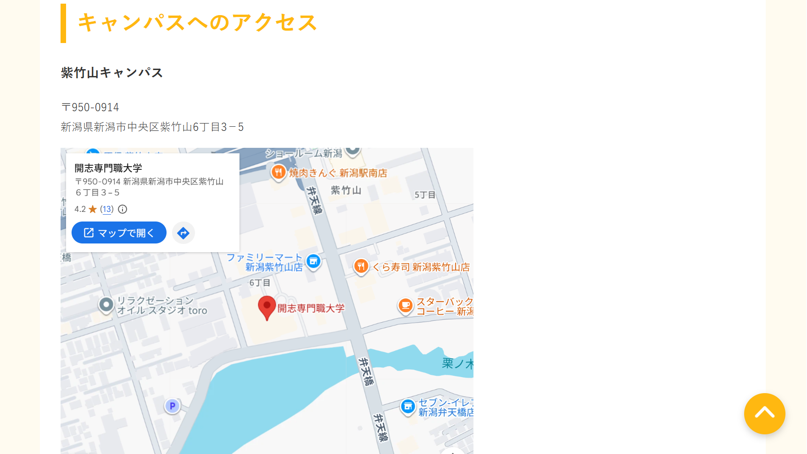
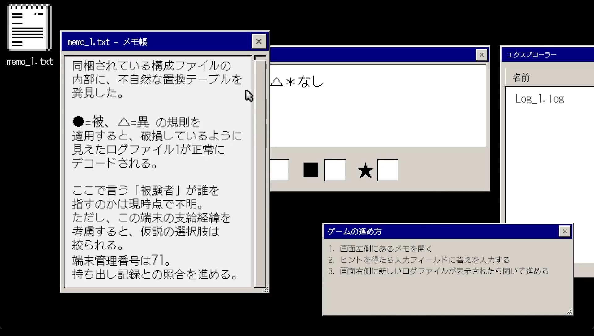
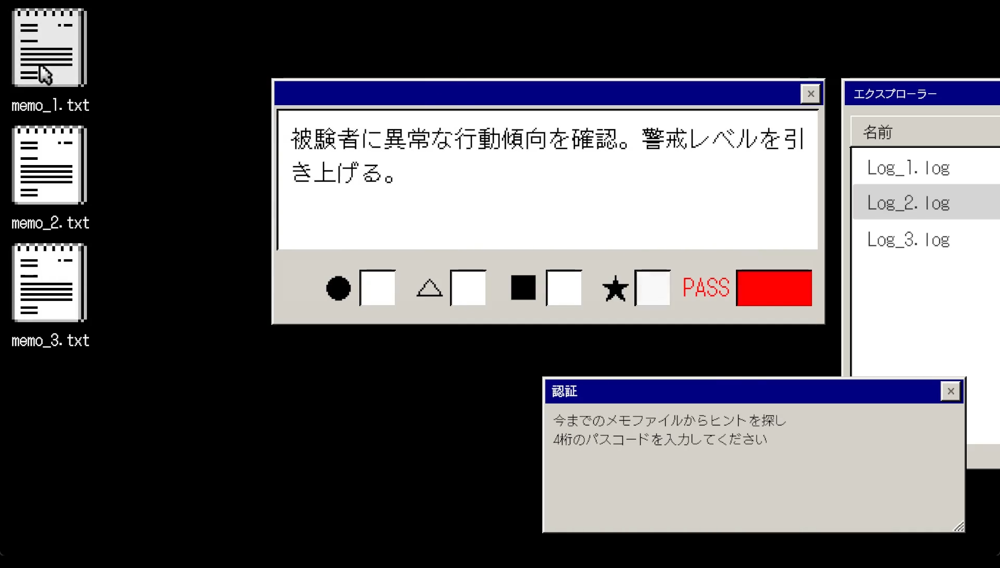
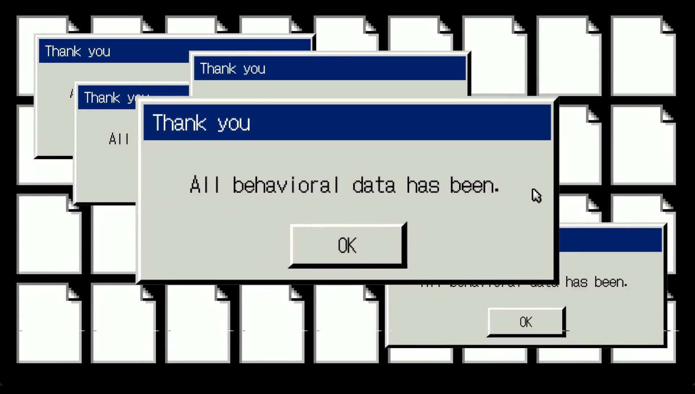

ealngos
開志専門職大学 情報学部 2年。
ITエンジニアを目指しており、現在、プログラミングやアルゴリズム、機械学習などを学んでいます。


日本語の意味を見て、正しい英単語を5択から選ぶクイズアプリ。
プログラミングでよく使う英単語を、全10問のクイズ形式で学習できるように制作。
| 作品名 | EnglishQuizProgram |
|---|---|
| 制作目的 | 2025年、「基礎ゼミⅡ」の夏休みの課題作品として制作。クラスの役割分担やコレクションの扱いを身につけるために制作。 |
| 使用技術 | Java |
| クラス構成 | QuizDataEntry（単語1組）、QuizData（単語データ）、QuizMain（クイズの進行）の3クラス |
| 主な機能 | ランダム出題（全10問）、5択の選択肢の自動生成、入力チェック、正答数・誤答数の表示 |
| 工夫した点 | 不正解の選択肢から正解を除いてシャッフルすることで、正解が重複しないようにした。数字以外や範囲外の入力時は、同じ問題で再入力できるようにした。 |
| 実行環境 | コンソール（CUI） |



大学の魅力や各学部の情報を紹介するWebサイト。
ホームページと3つの学部紹介ページからなる全4ページ構成で制作。
GitHubリポジトリ 制作したWebページ| 作品名 | 開志専門職大学 |
|---|---|
| 制作目的 | 2026年、「ネットワークプログラミング実習」の課題作品として制作。大学や各学部の情報をWebページ上で紹介するために制作。 |
| 使用技術 | HTML / CSS / JavaScript |
| ページ構成 | ホーム、3つの学部紹介ページ |
| 主な機能 | ギャラリー、お問い合わせフォームなど |
| 公開環境 | GitHub Pages |



未知の文字を文脈から推測し、短時間で解読していく探索・解読型アドベンチャーゲーム。
Windows 95 風の無機質なOS UIやノイズ演出を採用し、PC内の観察記録ログとメモを手がかりに暗号を紐解く不穏な世界観を表現。
GitHubリポジトリ※エラーが発生した場合、YouTube上の動画URLで動画を再生してください。
| 作品名 | NULL |
|---|---|
| ジャンル | 探索・解読型アドベンチャー（カジュアル） |
| 制作目的 | 2026年、「空間コンピューティング実習」の課題作品として制作。短時間で印象に残るゲーム体験の構築と実装を目的とする。 |
| 使用技術 | Unity (2D) / C# / Adobe Illustrator / AviUtl |
| 対応プラットフォーム | PC（Windows / Mac） |
| プレイ時間 | 約1〜2分 |
| 主な機能・特徴 |
|
| 動作・ビルド環境 | Unity |